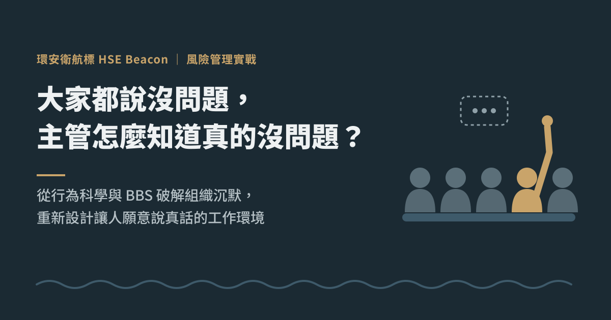

風險管理實戰 ／ 第 04 期專文
大家都說沒問題，主管怎麼知道真的沒問題？
從行為科學與 BBS 破解組織沉默，重新設計讓人願意說真話的工作環境

01｜會議室裡的集體點頭，與兩張突如其來的請假單
週一一早，主管看著投影幕上密密麻麻的工作排程。
「接下來幾週的工作量會增加不少，大家應該都還可以吧？有沒有什麼問題？」
會議室裡安靜了幾秒鐘。
有人低頭看著筆記，有人看了一眼身旁的同事，接著幾個人禮貌性地點了點頭。
「沒問題。」
主管鬆了一口氣，繼續討論下一個議題。
會議結束，所有人回到自己的工作崗位。排程沒有改變，人力沒有增加，原本已經相當緊湊的工作，繼續堆疊新的任務。
這是一個虛構的場景，卻可能是許多職場每天都在上演的真實縮影。
我們太習慣把會議室裡的沉默當成所有人都同意，把沒有人提出困難當成團隊仍有足夠的能力承擔工作。
直到某一天，有人突然請了長假，有人提出離職，或是一個原本不應該發生的操作失誤，打亂了整個工作計畫。
管理者才開始困惑：
「之前不是都說沒問題嗎？」
根據英國健康與安全執行局（Health and Safety Executive, HSE）2025/26 年度職業安全衛生統計，估計有約 89.1 萬名工作者受到工作相關壓力、憂鬱或焦慮的困擾，並造成約 1,820 萬個工作日的損失。
這些數字背後，有些人可能在問題變得嚴重之前，仍然正常出勤、參加會議、回覆電子郵件，甚至持續完成工作目標。
而在英國一家名為 Singer Instruments 的科學儀器公司，就曾經面臨類似的管理挑戰。
這家約有 45 名員工的企業，正處於業務成長階段。然而，公司卻接連有兩名員工因工作相關壓力而請病假。
對一家規模不大的企業而言，這不只是少了兩個人上班。
更值得追問的是，原本的工作安排與人力配置，是否仍然足以支撐企業成長後的實際需求？
但在討論人力配置之前，我們或許應該先問一個更根本的問題。
當員工已經感受到工作上的困難，為什麼管理者有時要等到病假、離職或事故發生之後，才真正意識到問題的存在？
02｜也許不是員工不願意說，而是組織教會了他們沉默
在離岸風電的營運維護（Operations & Maintenance, O&M）工作中，我經常參與作業前安全會議、承攬商風險評估審查，以及不同部門之間的工作協調。
這些會議通常都有一個相當熟悉的結尾。
「還有沒有其他問題？（AOB, Any Other Business）」
如果沒有人舉手，基本上這場會議就結束了。
但多年下來，我越來越覺得，這個看似合理的問題，其實存在著一個很大的管理盲點。
因為我們問的是：
「有沒有人願意在這個場合提出問題？」
卻很容易把得到的答案，解讀成：
「現場到底有沒有問題？」
這是兩件完全不同的事情。
說出問題，其實是有成本的
試著站在第一線工作人員的角度思考。
當主管、專案經理、客戶代表，以及其他部門的同事都坐在會議室裡，所有人都希望工作能夠按照原定計畫進行。
這時候，如果你提出人力不足、工期不合理，或是對某個作業步驟沒有足夠的信心，接下來可能會發生什麼事？
你可能需要花更多時間解釋自己的疑慮。
你可能被要求提出一套替代方案。
你也可能擔心，別人會認為你缺乏能力、不夠積極，甚至不願意配合團隊。
如果過去曾經有提出問題卻沒有獲得適當回應的經驗，你可能還會多想一件事：
「反正講了也沒有用，何必再講？」
在這樣的情況下，「沒問題」可能不是真的沒有問題，而是一個成本最低的回答。
這讓我想到環安衛領域中一個相當熟悉的管理方法——行為安全管理（Behavior-Based Safety, BBS）。
過去，我們經常透過 BBS 觀察第一線作業人員的行為。
- 有沒有正確佩戴個人防護具？
- 有沒有遵守安全程序？
- 有沒有在發現危害時停止作業？
- 有沒有主動通報未遂事件？
但如果今天我們把觀察的焦點，從第一線人員轉移到整個組織，會不會看見一些原本被忽略的事情？
用 ABC 模型拆解會議室裡的沉默
在行為科學中，有一個相當實用的分析框架，稱為 ABC 模型。
- A 是 Antecedent，代表行為發生之前的條件。
- B 是 Behavior，代表實際發生的行為。
- C 是 Consequence，代表行為發生之後所帶來的結果。
我們來嘗試用這個模型，重新觀察一名員工選擇沉默的過程。
假設他曾經向主管反映工作量過大，得到的回答卻是：
「大家都很忙，為什麼只有你有問題？」
另一次，他提出作業安全疑慮，卻因此被要求撰寫更多說明文件，最後工作條件也沒有獲得任何改善。
幾次經驗之後，當主管再次詢問「大家有沒有問題」時，他可能已經學會了一件事。
保持沉默，比提出問題更能避免麻煩。
| ABC 模型 | 組織中的可能情境 |
|---|---|
| A：前置條件 | 工期壓力、公開會議、權力不對等、過去通報未獲改善 |
| B：行為 | 保持沉默、回答沒問題、繼續承擔工作 |
| C：後果 | 避免衝突、避免額外行政工作、暫時維持人際關係 |
如果保持沉默能夠讓員工避開不愉快的結果，而且這種經驗使他未來更傾向保持沉默，那麼在行為科學上，這可能涉及一種稱為「負增強」（Negative Reinforcement）的機制。
負增強不是懲罰。
它是指某個行為因為能夠移除或避免不愉快的刺激，而在未來更容易再次發生。
換句話說，組織可能一邊要求員工主動通報，一邊透過每天的管理行為，不斷強化員工保持沉默。
這是相當諷刺的事情。
我們安排更多安全宣導、舉辦更多教育訓練，甚至要求每位員工每個月必須提交一定數量的安全觀察紀錄。
但真正影響行為的條件，卻始終沒有改變。
當然，不是每一次沉默都代表員工害怕，也不是所有組織沉默都能用單一行為增強機制解釋。
但管理者至少應該開始思考：
如果員工選擇沉默，我們除了檢討他為什麼沒有開口，是否也應該檢視組織過去是如何回應那些願意開口的人？
當外部載荷改變，設計基準也應該重新檢視
挪威海洋產業監管機關 Havtil 對 ConocoPhillips 海上設施的結構稽核，提供了另一個值得思考的角度。
當來訪船舶的規格、作業模式或其他外部條件發生改變，原本用於評估船舶撞擊風險的結構設計假設，是否仍然適用，就需要重新檢視。
不能因為一座結構過去沒有發生事故，就認為它必然能承受未來所有可能的負荷。
這個工程觀念，其實也適用於組織管理。
假設一個部門原本有五名員工，負責十項主要工作。
一年之後，公司業務成長了，客戶增加了，工作項目也從十項增加到十五項。
但部門的人力、工具、工作流程與決策權限，卻沒有相應調整。
我們甚至可能因為這五個人過去表現優秀，就認為他們應該有能力繼續承擔更多工作。
當然，人不是鋼構，人的心理狀態也不能像工程材料一樣，用單一數值精確計算。
但兩者有一個共同的管理原則：
當系統所承受的負荷發生實質改變，原本的安全假設就應該重新接受檢驗。
不能一方面期待組織持續成長，另一方面卻假設原本的人力與工作方式，可以無限承擔新的需求。
03｜Singer Instruments 做對了什麼？重新設計行為發生的條件
回到英國 Singer Instruments 的案例。
當兩名員工因工作相關壓力而請病假，公司首先透過分階段復工及適當的職務調整，協助員工逐步回到工作崗位。
但如果管理工作只停留在這裡，問題可能還沒有真正解決。
因為員工回到的，可能仍然是原本讓他感受到壓力的工作環境。
Singer Instruments 更值得學習的地方，在於他們進一步檢視工作需求，並透過員工訪談、人力調整及跨職務訓練，嘗試處理工作負荷背後的結構性問題。
如果從行為科學的角度重新解讀這個案例，我認為可以將它整理成三個步驟。
第一步：改變前置條件，降低說出問題的成本
當組裝部門的工作需求出現異常訊號時，公司的 HSEQ 管理者可以透過 1 對 1 的保密訪談，進一步了解員工面臨的困難。
這個做法看似簡單，卻有一個重要的行為設計差異。
公開會議是要求員工當著所有人的面，決定自己是否願意提出疑慮。
1 對 1 的單獨訪談則提供另一條相對低風險的溝通管道。
這相當於重新設計了 ABC 模型中的 A，也就是行為發生之前的條件。
更重要的是，訪談不應只停留在：
「最近壓力大不大？」
而應該進一步了解工作本身。
- 哪些任務經常超出原本預期的時間？
- 哪些工作集中在少數具有特定技能的人身上？
- 哪些流程因為交接、資訊不足或等待決策而反覆延誤？
- 當工作量增加時，員工是否有權限重新安排優先順序？
這些問題能將原本模糊的壓力感受，逐步轉化為可以被管理的工作條件。
「我最近真的很累」是一個值得重視的訊號。
但如果我們進一步知道，某位員工同時承擔三項工作，而且其中兩項只有他具備必要技能，管理者就有了更明確的改善方向。
傾聽的目的，不只是讓員工把話說出來，而是讓組織有機會看見原本沒有被納入管理的風險。
第二步：改變行為後果，讓說出問題真的有用
Singer Instruments 在了解組裝部門的工作需求後，採取了實質的人力調整，並透過跨職務訓練（Cross-training），讓更多員工具備支援不同工作的能力。
他們沒有只停留在關心員工的情緒，而是進一步檢視工作本身的設計。
在許多企業裡，當員工反映工作壓力過大時，組織可能安排心理健康講座、壓力管理課程、員工關懷活動，或提供心理諮詢資源。
當然這些措施都有其價值和目的。
但如果壓力主要來自長期人力不足、不合理的工作量、角色衝突，或缺乏完成任務所需要的資源，那麼只提供個人的壓力調適工具，可能不足以解決問題。
就像一套局部排氣系統的抽氣能力不足，我們不能只要求現場人員更有技巧地避開污染物。
我們還需要重新檢視排氣設備的設計與實際負荷。
從行為科學來看，人力調整也改變了 ABC 模型中的 C，也就是員工提出問題之後所帶來的結果。
過去，提出問題可能只會帶來更多說明、更多行政工作，以及更多人際壓力。
現在，提出問題有機會換來實際的人力支援、工作重新分配，以及必要的技能訓練。
當員工逐漸發現，說出問題不一定會帶來麻煩，反而有機會改善工作條件，組織就創造了更有利於主動發聲的行為環境。
這也是心理安全感（Psychological Safety）與行為科學之間的重要連結。
心理安全感不是靠主管宣布「我的辦公室永遠為你敞開」就能建立。
它需要透過一次又一次的實際互動，讓員工逐漸形成對組織的信任。
不要把組織的產能不足，包裝成員工的抗壓性不足。
第三步：回到現場，確認新的行為環境真的有效
Singer Instruments 在人力調整後，並沒有立即將問題視為已經解決。
管理者在數週後再次與員工接觸，確認先前提出的問題是否獲得改善。
這個步驟很容易被忽略。
因為對管理者而言，增加人力、完成訓練或重新分配工作，已經是一項具體的管理成果。
但對第一線員工而言，真正重要的是這些措施有沒有改變自己的工作處境。
- 增加了一名員工，不代表原本的工作瓶頸一定消失。
- 完成跨職務訓練，不代表受訓者已經具備獨立執行工作的能力。
- 重新分配工作，也可能只是把原本集中在某個人身上的負荷，轉移到另一個人身上。
因此，後續回訪不應只是一句禮貌性的關心，而應該是有效性驗證的一部分。
這也呼應了我們前兩篇文章所討論的觀念：
改善措施完成，不等於改善已經有效；階段性成果取得，也不代表所有風險都已經受到控制。
Singer Instruments 的公開案例呈現了復工安排、員工訪談及改善措施的實務經驗，但並未提供足以量化病假降幅或長期心理健康改善幅度的資料。
我們不能因此宣稱這套做法已經徹底解決工作壓力。
不過，它仍然提供了一個很值得借鏡的管理方向：
降低發聲成本，調整工作條件，重新建立回饋，再驗證改善是否有效。
這是我認為行為安全管理值得進一步發展的方向。
不只是改變人的行為，而是改變塑造人類行為的系統。
04｜如果 BBS 也開始觀察主管的行為，會發生什麼事？
多年來，企業透過行為安全管理觀察第一線作業人員的安全行為。
我們記錄正確佩戴防護具的比例、觀察工作程序是否落實，以及員工有沒有主動辨識危害。
這些觀察有其價值。
但我想提出一個問題：
如果一家企業每年完成數千次第一線安全行為觀察，卻從來沒有觀察過主管如何回應安全疑慮，那麼這套 BBS 計畫是否只觀察了整個系統的一部分？
假設今天有一名技師，在作業前發現海況比預期更差，認為原本的工作計畫需要重新評估。
他提出疑慮，甚至啟動停止作業權（Stop Work Authority）。
接下來主管的回應，可能決定的不只是今天這項工作能不能安全進行。
它還可能影響這名技師，以及在場其他同事，下一次遇到類似情況時是否願意再次開口。
如果主管的第一個反應是：
「你知道今天停工會造成多少損失嗎？」
那麼即使公司的安全政策寫著「每個人都有權停止不安全的作業」，員工真正學到的，可能仍然是停止作業會帶來麻煩。
相反地，如果主管支持必要的作業暫停，重新評估風險，並提供適當的資源，員工就有機會從實際經驗中建立對制度的信任。
主管的行為，本身就是影響員工未來安全行為的重要條件。
因此，我認為 BBS 的觀察對象不應只停留在第一線人員。
我們也應該觀察管理者。
| 管理情境 | 值得觀察的管理行為 |
|---|---|
| 員工提出工作困難 | 是否主動檢視工作負荷與資源？ |
| 承攬商提出工期疑慮 | 是否願意重新評估排程？ |
| 員工啟動 Stop Work | 是否支持必要的暫停與風險評估？ |
| 發現未遂事件 | 是否先了解事件發生的條件？ |
| 員工承認不熟悉工法 | 是否提供必要的支援與訓練？ |
| 收到安全改善建議 | 是否指定負責人並回饋處理進度？ |
| 改善措施完成 | 是否確認現場工作條件真的改善？ |
這不是為了建立另一套監督主管的評分制度。
而是希望組織能夠理解，安全行為並不是由第一線人員單方面決定的。
它同時受到工作設計、設備條件、管理決策、資源配置，以及組織文化的影響。
從一句「有沒有問題」，開始改變管理行為
在作業前工具箱會議（Toolbox Talk, TBT），或審查承攬商的風險評估與作業方法說明（RAMS）時，我們可以試著改變提問方式。
不要只問：
「大家對今天的工作有沒有問題？」
而是進一步問：
- 「今天哪一個工作步驟，最容易因為時間壓力而被簡化？」
- 「如果海況比預期更差，哪些工作需要重新安排？」
- 「如果關鍵設備發生異常，我們有哪些資源可以支援？」
- 「哪一項工作目前只有一個人具備執行能力？」
- 「如果今天無法完成所有工作，哪些任務可以延後？」
這些問題讓現場人員不必直接承認自己能力不足，而是邀請他們共同檢視工作條件與可能發生的變化。
但改變提問方式只是第一步。
如果員工提出困難之後，工作安排仍然完全沒有改變，那麼再好的提問技巧，也可能逐漸失去作用。
真正的閉環應該包括：
- 辨識工作困難與風險訊號。
- 了解促成問題的工作條件。
- 指定具有處理權限的負責人。
- 採取必要的資源或工作設計調整。
- 回訪並驗證改善效果。
- 將處理結果回饋給相關人員。
涉及立即危險的問題，必須即時採取適當的安全措施，而不能等待例行追蹤。
涉及個人健康的資訊，也必須受到適當的保密與隱私保護。
至於一般性的工作負荷與流程問題，則可以依照風險程度，設定合理的改善期限及後續回訪時間。
比起單純統計安全觀察的數量，我更希望組織開始關注：
- 員工提出問題之後，有多少問題真正獲得處理？
- 管理者採取實質改善行動，需要多長時間？
- 相同的工作困難，是否反覆出現？
這些指標不能單獨代表組織的安全文化，但可以幫助我們理解，組織是否具備接收與回應風險訊號的能力。
在家庭裡，我們是否也在無意間強化沉默？
這個道理，其實不只存在於企業管理與高風險作業現場。
在陪伴孩子的過程中，我也開始反思自己面對孩子提出困難時的反應。
當孩子說「我不想去洗澡」、「我不想睡覺」，或是在某件事情上表現出抗拒時，身為父母的第一個反應，往往是希望他趕快配合。
但如果孩子每次表達困難，得到的都是催促、責備或否定，他可能逐漸學會：
表達自己的感受，並不會讓事情變得更好。
當然，理解孩子的感受，不代表所有規則都可以取消。
父母仍然需要建立適當的生活界線。
但我們可以試著區分兩件事情：
接受對方的感受，以及是否同意對方的要求。
就像在職場裡，主管不一定能答應員工提出的每一項資源需求，但仍然可以認真理解問題、說明限制，並共同尋找可行的解決方法。
我逐漸發現，真正重要的並不是讓孩子每一次都聽話，而是讓他知道，當自己遇到困難時，可以安心地說出來。
因為如果我們只追求眼前的服從，卻讓對方逐漸失去表達困難的意願，那麼表面上的順利，可能是以長期的信任為代價。
家庭不是工廠，孩子也不是需要被管理的生產資源。
但兩者都提醒我一件事：
我們如何回應別人的第一次發聲，可能影響他未來是否願意再次開口。
05｜真正的安全文化，不是沒有人說「我撐不住了」
回到星期一早上的那間會議室。
主管再次看著緊湊的工作排程。
但這一次，他沒有只問一句：
「應該都沒問題吧？」
而是試著問：
- 「這週新增了不少工作，哪些任務可能超出我們目前的負荷？」
- 「如果必須重新安排優先順序，哪些事情可以先放下？」
- 「有沒有哪些工作，需要其他部門提供支援？」
會議室裡依然安靜了幾秒鐘。
接著，有人舉起了手。
「其實，有一件事情我想提出來討論。」
對某些管理者而言，這可能代表原本的工作計畫即將被打亂。
但這反而是一個值得珍惜的時刻。
因為組織終於有機會，在問題變成事故、長期病假或人員流失之前，先看見它。
回顧《環安衛航標》前幾篇文章，我們談過如何透過工程設計降低人為失誤的風險，如何驗證控制措施的有效性，以及如何界定改善措施的結案邊界。
而這一次，我們開始進一步追問：
人的安全行為，究竟是如何被組織塑造的？
如果我們希望員工主動辨識危害，就必須提供足夠的時間與資源。
如果我們希望員工在必要時停止作業，就必須讓他知道這個決定會受到適當的支持。
如果我們希望員工誠實反映工作困難，就必須讓他相信，說出問題不會只換來更多麻煩。
這也是我希望在未來進一步探討的研究方向——系統性行為安全管理（Systemic Behavioral Safety）。
它不是要否定傳統的 BBS，而是希望將行為安全管理的視角，從第一線人員的個別行為，延伸到塑造這些行為的工作環境、管理決策與組織制度。
因為真正成熟的安全文化，不是永遠沒有壞消息。
而是有能力在壞消息還沒有變成嚴重後果之前，聽見它、理解它，並採取適當的行動。
會議室裡的沉默，從來不足以證明一切風平浪靜。
真正穩固的系統，不是靠要求每個人咬牙硬撐出來的。
而是當有人第一次舉手說：
「這裡太重了。」
整個組織願意停下來，認真檢視並調整負荷。
然後，在幾週之後，再回頭問一句：
「現在，好一點了嗎？」
案例來源與延伸閱讀
英國｜Singer Instruments 工作壓力管理案例
英國 HSE 壓力管理案例頁。案例記載復工安排、保密訪談、增加人力與跨職務訓練，以及數週後回訪的員工回饋，未提供量化的病假降幅。官方來源
英國｜2025/26 年度職業健康與安全統計
HSE 年度統計，2026.11 發布，資料期間 2025/4 至 2026/3。官方來源
挪威｜Havtil 對 ConocoPhillips 承重結構稽核
Havtil 稽核報告，2026.11.20 公布，涉及可能遭來訪船舶撞擊之橋樑的設計載荷與抗撞能力。官方來源
本站相關
編輯註：開場會議與文中的部門、技師情境為作者設計的假設情境。ABC 模型與「觀察管理者行為」的延伸為本文的分析框架，並非上述機關提出的做法。